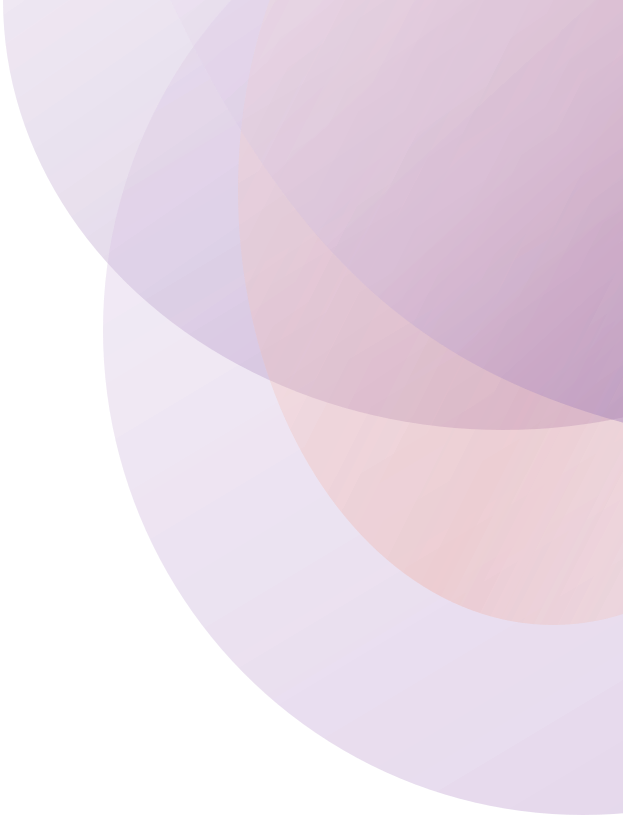
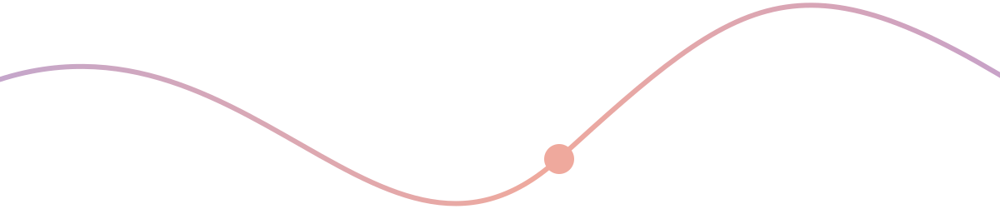

Between Us.
A journal for noticing the patterns we carry into connection.

A space to slow down.
Between Us uses creative reflection to help you look at the way you connect, through drawing, visual mapping and short written prompts.
Across seven activities and a final reflection, you’re invited to notice the responses that feel most familiar, explore what might sit beneath a reaction, map how close or distant your relationships feel, consider where you might need more space or clearer boundaries, and think about what you need from the people around you.
It isn’t a test, and there’s nothing to get right. Take what resonates, leave what doesn’t.
How to use this journal.
Take your time
Move through the activities at your own pace. There is no set order or time limit.
Be honest
This space is for you. Explore your thoughts and feelings openly, without judgement.
Reflect
Use the prompts to explore your experiences, recognise patterns and discover new perspectives.
Make it yours
There are no right or wrong answers. Write, draw or skip anything that doesn’t feel right for you.
Seven activities. One reflection.
Choose any activity to open it in the reader below.
Read the journal.
The online reader is view-only. Download the journal to print it, or to write on it in a PDF app.
Page 01 / 20
Cover

Take it with you.
Keep Between Us on your device or print it at home, then return to it whenever you need a moment to reflect.
Your reflections stay with you. This website has no accounts and doesn’t collect anything you write.
-
Single pages · Best for reading on mobile or printing
Between Us journal
-
Two-page spreads · Best for larger screens
Between Us spreads
Keep exploring.
Explore the ideas behind the journal: patterns, reactions, closeness and space, and the needs we bring into connection.
Explore connection